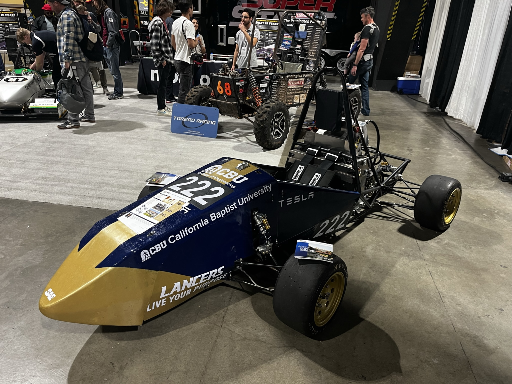
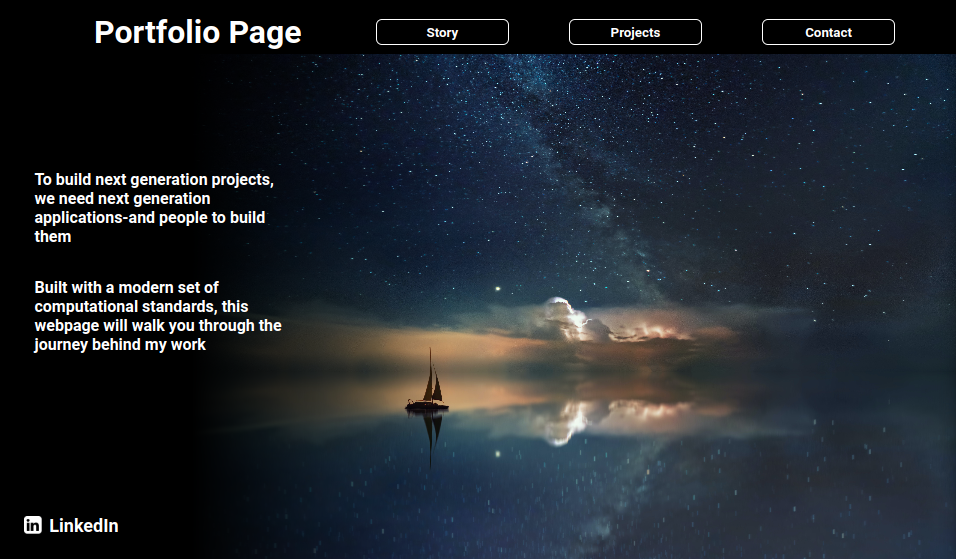
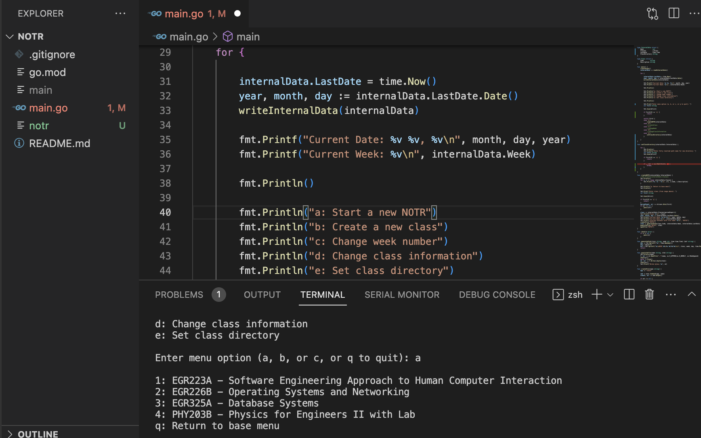

-
-
Lancers Electric Racing
To demonstrate excellence in the field of electrical and mechanical engineering, California Baptist University has decided to enter into the Society of Automotive Engineers (SAE) Electric Vehicle Collegiate Design competition. This international competition requires the highest caliber of skill, teamwork, and leadership.
As the electronics subsystem lead, I have been responsible for the integrity and safety of the vehicle including systems integration. This includes low voltage circuitry, high voltage circuitry, data acquisition systems, and integration with other subsystems.
The 2023 competition will be the first all electric competition hosted by SAE. Lancers Electric Racing plans on being extremely competitive this year on and off the track. As a team, we have designed and built our car to be at the top.
- 
-
-
- 
-
Portfolio Website
A completely hand written static website built with HTML and CSS. Originally meant for a HCI school project but repurposed for portfolio management.
The tools used to built this web application were Visual Studio Code, Git, and several Visual Studio Code extensions for increase productivity.
The original codebase was hosted with GitHub Pages and GitHub actions, but has been since moved to Vercel. The original and subsequent styling has been completed on Figma
-
-
NOTR: A CLI Based Notetaking Tool
A note taking app written completely in Go! This project helps keep notes small and organized. With a single builtin config file and a codebase within a single file, this application can be read within a single day (even before running for the first time).
The app currently supports writing to a specific file structure, loads stored configuration into memory,and provides easy time stamping with week number to the file before handing control to the user.
The app demonstrates the possibility of minimizing code in order to create a useful HCI tool which can be used daily to make repetitive tasks more reliable and consistent. This app is a WIP and should not be used for production
- 
-